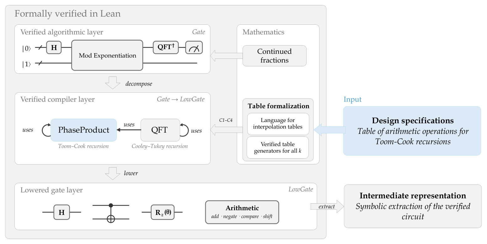
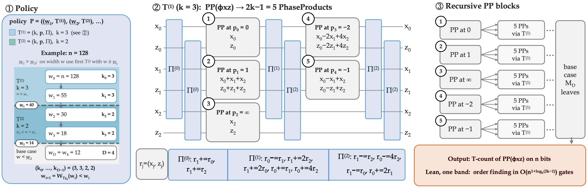
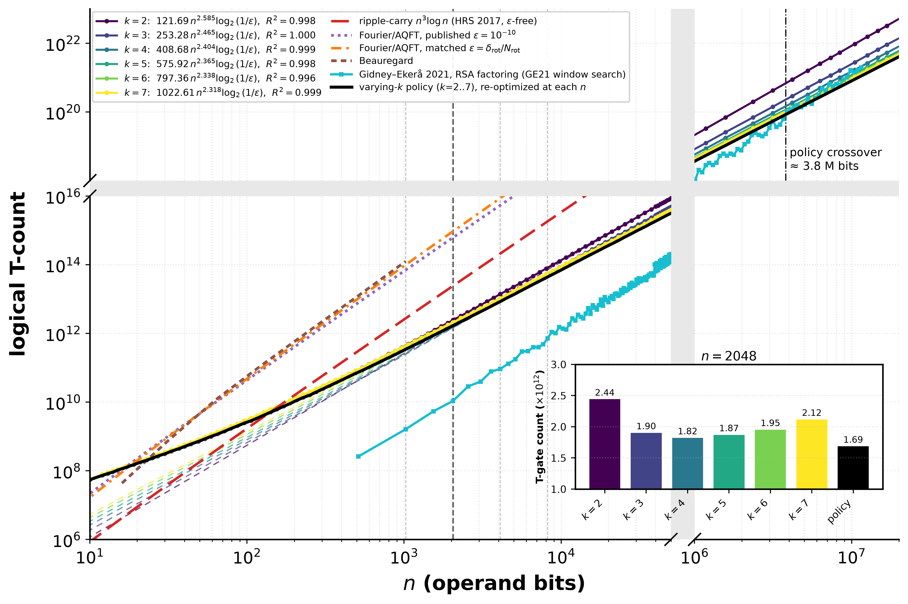

A Lean 4 harness verifies that user-submitted recursive Toom-Cook policies yield correct Shor order-finding circuits with O(n^{2+ε}) gate cost, then exports an IR to Qualtran.
Abstract
It is commonly understood that factoring a general $n$-bit biprime via Shor's order finding algorithm requires $\widetilde{O}(n^3)$ gates by leveraging schoolbook integer arithmetics for addition and multiplication. Recent developments in quantum arithmetic circuits leveraging recursive Toom-Cook schemes have improved the cost scaling to $O(n^{2+ε})$. Here $ε>0$ depends on algorithm implementation details of the recursive multiplication steps, which allow for a vast number of design choices. The challenge in navigating such design space also presents an opportunity for demonstrating innovative practices in quantum software engineering in the era of open agentic science. We present a formally verified harness that ingests a design specification (namely a "policy" that describes a recursive circuit design scheme) from an external source, which may be an AI agent, and produces a set of formalized proofs covering mathematical correctness of the algorithm implementation, asymptotic scaling of the end-to-end gate cost, as well as the correctness of translating the verified algorithm to a detailed circuit implementation with an intermediate representation. The harness is published as an open challenge where human researchers and AI agents can search for more efficient factoring circuits while retaining machine-checked guarantees of correctness and end-to-end asymptotic complexity.
Problem
Shor's order finding can reach O(n^{2+ε}) gate cost through recursive Toom-Cook PhaseProduct multiplication, but the design space of recursion policies is very large. Contributions from humans or AI agents need machine-checked guarantees of correctness and asymptotic cost.
Approach
ForShor is a Lean 4 harness that accepts a policy: a list of interpolation tables with strictly decreasing width thresholds, each carrying proofs of validity conditions C1–C4. Correctness, success-probability and gate-count theorems are proved once for all valid policies. A verified compiler lowers the Gate circuit to a LowGate circuit. An intermediate representation extracted from the same Lean definitions is translated to Qualtran for logical resource estimation, with numerical validation of each subroutine.

Figure 3: The verified part of Figure 1 in detail. The order-finding circuit is written in Gate . Its PhaseProduct and QFT subroutines are constructed recursively once every table in the submitted policy passes C1–C4. A verified compiler produces the LowGate circuit from which the intermediate representation is extracted. Figure 2 is an expanded view of the PhaseProduct part of this schematic.

Figure 2: Schematic recursive PhaseProduct policy. (1) An policy P=((\underline{w}_{1},T^{(1)}),(\underline{w}_{2},T^{(2)}),\ldots) (Definition 2.2 ) pairs register width thresholds \underline{w}_{1}>\underline{w}_{2}>\cdots with interpolation tables T=(k,\mathbf{p},\Pi) (Definition 2.1 ), specifying one recursion level number of chunks (arity) k , ordered interpolation points \mathbf{p} and a pro
Results
Any valid policy yields a formally verified order-finding circuit with proved O(n^{2+ε}) asymptotic gate cost. At n=2048, a varying-arity policy gives about 1.685×10^12 T-gates, compared with 1.820×10^12 for the best single arity (k=4). The harness is released as an open challenge at forshor.ai.

Figure 4: Logical T-gate count of Shor’s order-finding algorithm using a PhaseProduct construction of Toom-Cook multiplication and QFT. Following a single k -arity brings a best-found T-gate count at k=4 with 1.820\times 10^{12} T-gates, with asymptotic improvements for larger n favoring higher k . Upon using a varying- k policy for PhaseProduct (different k at different levels in the recursion),